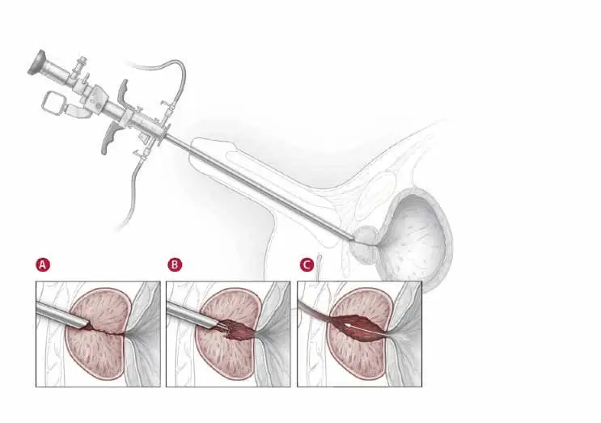

علاج تضخم البروستاتا بالمنظار وتبخير الأنسجة
Bipolar TURP — تقنية حديثة لاستعادة التدفق الطبيعي للبول دون فتح جراحي ومع حماية كاملة لوظائف التحكم والقدرة الجنسية.
أعراض تضخم البروستاتا الحميد
ضعف تيار البول
صعوبة وبطء في بدء اندفاع التبول وانقطاعه المتكرر على دفعات متقطعة.
التبول الليلي المتكرر
الاستيقاظ المتكرر ليلاً أكثر من 3 مرات مما يسبب الأرق والإجهاد المزمن.
احتباس نسبي بالمثانة
الإحساس الدائم بعدم إفراغ المثانة بشكل كامل بعد الانتهاء من التبول.
الإلحاح البولي المفاجئ
شعور فجائي بضرورة التبول السريع مع عدم القدرة على التأجيل.
متى يصبح المنظار حلاً حتمياً؟
معايير د. كريم زاهر الدقيقة للتدخل
- check_circle عدم استجابة الأعراض للعلاجات الدوائية التقليدية وتراجع فاعليتها.
- check_circle حدوث احتباس بولي حاد متكرر يستدعي تركيب قسطرة إسعافية.
- check_circle تكوّن حصوات داخل المثانة أو تأثر وظائف الكلى نتيجة ارتداد البول.
- check_circle تكرار النزيف البولي أو الالتهابات الميكروبية المزمنة للمسالك.
أحدث تقنيات المنظار بالعيادة
استئصال بمناظير القطبين (Plasma Kinetic)
استخدام محلول الملح الفسيولوجي بدلاً من المحاليل القديمة يمنع تماماً متلازمة امتصاص السوائل (TUR Syndrome)، مما يمنح أماناً بنسبة 100% لمرضى القلب وارتفاع ضغط الدم.
تقشير وتبخير أنسجة الفص المتضخم
تفريغ كامل للتجويف مع بقاء الكبسولة الخارجية سليمة، ما يضمن عدم عودة التضخم مجدداً على المدى الطويل مع توسيع ممر مجرى البول لأقصى اتساع ممكن.
خريطة العلاج وسرعة التعافي
-
1
الفحص والتقييم الدقيق
سونار المسالك لقياس الحجم ومتبقي البول، وقياس ديناميكية التبول (Uroflowmetry) لتحديد الخطة الجراحية بدقة.
-
2
إجراء المنظار المتقدم
45-60 دقيقةعملية آمنة تستغرق من 45 إلى 60 دقيقة تحت تخدير نصفي خفيف عبر الفتحة البولية الطبيعية دون جروح.
-
3
رفع القسطرة والعودة للمنزل
24-48 ساعةإزالة القسطرة البولية خلال 24 - 48 ساعة فقط، ومغادرة المستشفى مع تدفق بول سلس وشعور بالراحة الفورية.
تجارب حقيقية لمرضانا
star 4.9 / 5"كنت أعاني من الاستيقاظ 5 مرات كل ليلة وصعوبة شديدة. بعد منظار البلازما مع د. كريم زاهر بفضل الله تم رفع القسطرة ثاني يوم ورجعت لحياتي الطبيعية ونومي الهادئ."
"الشرح الوافي والأمانة العلمية من الدكتور أزالت كل قلقي من العملية وتأثيرها على القدرة الجنسية. الإجراء كان سلساً وبدون ألم يُذكر."
الأسئلة الشائعة حول تضخم البروستاتا
هل تؤثر العملية على التحكم في البول؟
هل يمكن إجراء العملية لمرضى القلب والسيولة؟
متى يمكن العودة للعمل وممارسة النشاط المعتاد؟
احجز كشفك الآن مع د. كريم زاهر
فحص بالموجات فوق الصوتية وقياس تدفق البول لتقييم الحالة واختيار أنسب وسيلة علاجية.
زهراء المعادي - الشطر الثالث عشر - برج الندى (الدور الأول).